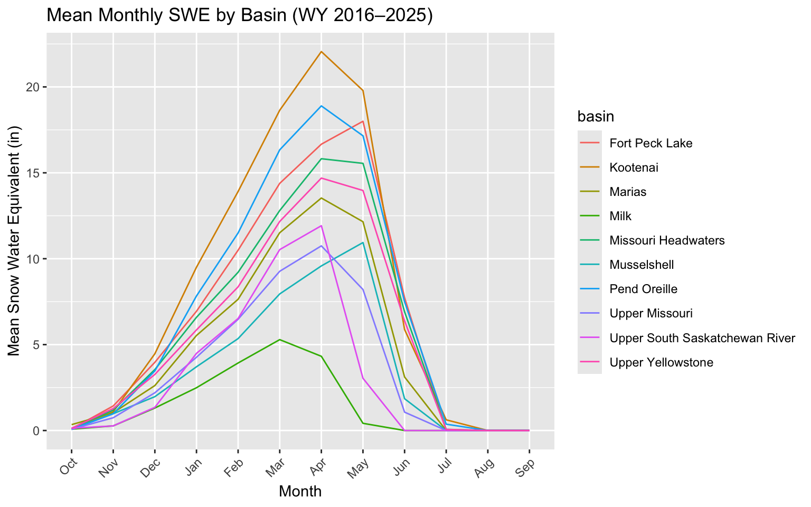

This project explores snowpack trends across the 10 drainage basins in Montana between 2015 and 2025. Our focus is on snow water equivalent (SWE), which is a measure of the amount of water contained within the snowpack. Because snowpack is a major source of water for rivers, agriculture, recreation, population centers, and many other parts of life in Montana, comparing SWE across basins allows us to investigate differences in seasonal water availability.
The Natural Resource Conservation Service (NRCS), a department of the U.S. Department of Agriculture, runs and maintains over 850 snow telemetry (SNOTEL) sites across the western U.S. and Alaska. These sites are automated monitoring stations that collect data on snowpack and climate conditions in mountain areas. SNOTEL sites commonly collect data on SWE, snow depth, precipitation, and air temperature. Some enhanced sites also collect soil moisture, soil temperature, solar radiation, wind speed, relative humidity, and atmospheric pressure, though not every site records every variable.
Using the NRCS Air & Water Database Report Generator, we manually selected all 96 SNOTEL sites located in Montana and included the variables date, station name, station ID, latitude, longitude, elevation, SWE, snow depth, HUC6 code, and median SWE from 1991–2020. The median SWE variable represents the typical SWE value for each site and date based on the 1991–2020 reference period, which allows current observations to be compared to longer-term normal snowpack conditions.
We were interested in data from October 2015 to September 2025 across all 96 sites, so pulling daily observations from each site for the entire 10-year span was not practical. Instead, we pulled monthly data from the first day of each month, which greatly reduced the size of our dataset. Each observation for each station was pulled from the first day of the month, so stations and years can be compared directly.
For this project, the term “year” refers to the water year (abreviated to “WY”), which runs from October 1 to September 30 of the following calendar year and is named for the year in which it ends. For example, the 2025 water year begins on October 1, 2024 and ends on September 30, 2025. The dataset was cleaned so that there are columns for both month and year of observation, with month stored as a factor beginning with October.
The dataset also contains HUC6 codes for each station and observation. HUC6 codes are six-digit Hydrologic Unit Codes used to identify large drainage basins or watershed regions. In this project, these codes were used to group individual SNOTEL sites into major Montana drainage basins, allowing SWE patterns to be compared by watershed instead of only by individual station.
One limitation of this dataset is that it uses monthly observations from the first day of each month rather than daily records. This makes the dataset easier to work with and compare across stations, but it also means that short-term snow events, melt periods, or rapid changes between months are not captured. Because of this, the dashboard is best used to compare broad seasonal and basin-level SWE patterns rather than day-to-day snowpack conditions.

| Drainage Basin | Mean SWE | Median SWE | Maximum SWE |
|---|---|---|---|
| Kootenai | 8.00 | 2.95 | 51.6 |
| Pend Oreille | 7.00 | 1.70 | 69.8 |
| Fort Peck Lake | 6.64 | 3.80 | 28.6 |
| Missouri Headwaters | 5.99 | 2.70 | 52.0 |
| Upper Yellowstone | 5.51 | 1.70 | 56.8 |
| Marias | 4.79 | 0.95 | 39.7 |
| Upper Missouri | 3.58 | 1.00 | 27.0 |
| Musselshell | 3.53 | 2.05 | 15.3 |
| Upper South Saskatchewan River | 3.19 | 0.05 | 19.0 |
| Milk | 1.51 | 0.00 | 9.2 |
Across most basins, SWE follows a clear seasonal pattern. Snowpack begins building in the fall and winter, reaches its highest values in the spring, and then declines quickly during late spring and summer. This pattern reflects Montana’s seasonal snow accumulation and melt cycle.
The summary table shows that the basins Kooteni, Pend Oreille, and Fort Peck Lake consistently have higher SWE than others. These differences are likely related to elevation, mountain range location, and regional climate patterns. Because the dashboard averages across all stations in each basin, the results are best interpreted as broad basin-level patterns rather than conditions at one specific SNOTEL site.